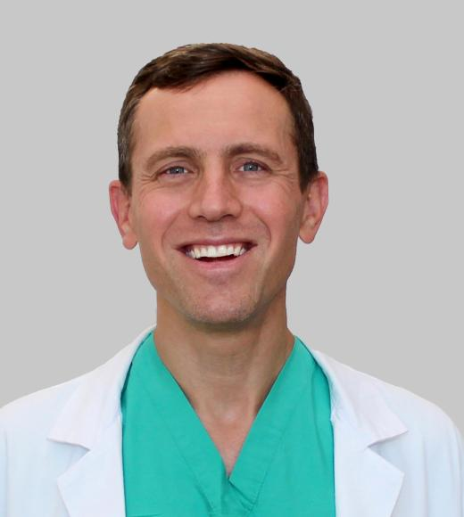

This page will evolve as our community grows.
People
Our Community
Meet the faculty, postdoctoral researchers, and students of CS AI4H.
Leadership


Postdocs
Students


CS AI4H is a hub for AI for Health efforts anchored in the Computer Science Department, in the College of Engineering (CoE) at UC Davis. Its purpose is to catalyze AI x Health relationships for research, education, translation, and responsible innovation in artificial intelligence (AI) for health. Specific goals are to:
CS AI for Health serves as a hub for AI-related health research, education, and community engagement, establishing links between UC Davis and UC Davis Health.
We aim to create AI systems that genuinely support clinicians and patients, improve outcomes, and reduce disparities. From early exploration to deployment, our work centers on transparency, collaboration, and impact.
Explore the tools and assets we are assembling to accelerate responsible AI for health across UC Davis.
MIMIC-III & MIMIC-IV (MIT/PhysioNet) – De-identified electronic health records (EHR) from critical care patients (ICU stays at Beth Israel Deaconess Medical Center). Includes demographics, vital signs, lab results, medications, etc., for tens of thousands of ICU admissions (GitHub - geniusrise/awesome-healthcare-datasets: Healthcare and biomedical datasets, for AI/ML). Access: Free for research with data use agreement and training (GitHub - geniusrise/awesome-healthcare-datasets: Healthcare and biomedical datasets, for AI/ML). MIMIC-IV (2008–2019) is the updated version of MIMIC-III (GitHub - geniusrise/awesome-healthcare-datasets: Healthcare and biomedical datasets, for AI/ML).
eICU Collaborative Research Database – Multi-center intensive care unit database from 208 hospitals across the US (another large ICU dataset). Contains patient physiology, treatments, outcomes. Available via PhysioNet with similar access requirements (GitHub - geniusrise/awesome-healthcare-datasets: Healthcare and biomedical datasets, for AI/ML).
NIH Chest X-ray14 Database – A large public imaging dataset of 112,000+ frontal chest X-rays from the NIH Clinical Center, annotated with 14 common thoracic pathology labels (e.g. pneumonia, nodule, effusion) extracted from radiology reports (CheXNet: Radiologist-Level Pneumonia Detection on Chest X-Rays with Deep Learning) (GitHub - geniusrise/awesome-healthcare-datasets: Healthcare and biomedical datasets, for AI/ML). Widely used for training and benchmarking medical image models.
CheXpert Chest X-ray Dataset (Stanford) – A collection of 224,316 chest radiographs from 65,240 patients, labeled for 14 observations (like lung opacity, cardiomegaly) via automated report analysis (Shared Datasets | Center for Artificial Intelligence in Medicine & Imaging). Accompanied by a labeled validation and test set. Useful for developing diagnostic models; a subset with radiology reports paired to images (CheXpert Plus) is also available (Shared Datasets | Center for Artificial Intelligence in Medicine & Imaging). Access: Public for research use (hosted by Stanford AIMI) (Shared Datasets | Center for Artificial Intelligence in Medicine & Imaging) (Shared Datasets | Center for Artificial Intelligence in Medicine & Imaging).
The Cancer Imaging Archive (TCIA) – An NIH-funded repository of medical imaging datasets, primarily cancer-related (CT, MRI, digital pathology, etc.). TCIA hosts dozens of open datasets, including lung CT scans (LUNA16 for nodule analysis), brain MRI (Brain Tumor Segmentation challenges), prostate MRI, etc. (GitHub - geniusrise/awesome-healthcare-datasets: Healthcare and biomedical datasets, for AI/ML) (GitHub - geniusrise/awesome-healthcare-datasets: Healthcare and biomedical datasets, for AI/ML). Many collections include expert annotations or lesion segmentations. Access: Open to public (download from TCIA website).
The Cancer Genome Atlas (TCGA) – A landmark cancer genomics program that molecularly characterized ~11,000 tumors across 33 cancer types (with matched normal tissues). It generated 2.5 petabytes of genomic and clinical data (DNA/RNA sequencing, epigenetics, proteomics, etc.), which are publicly available for research (The Cancer Genome Atlas Program (TCGA) - NCI). Access: Through the NCI Genomic Data Commons (with web portal and tools) (The Cancer Genome Atlas Program (TCGA) - NCI). (Imaging data for many TCGA cases are also available via TCIA (GitHub - geniusrise/awesome-healthcare-datasets: Healthcare and biomedical datasets, for AI/ML).)
PhysioNet Signal Datasets – PhysioNet hosts a variety of physiological waveform datasets: e.g. ECG recordings (MIT-BIH Arrhythmia Database), EEG, wearable sensor data, etc. These support research in cardiovascular and neurological signal analysis. (PhysioNet also hosts challenges and other clinical datasets beyond ICU, such as the PTB-XL ECG dataset (GitHub - geniusrise/awesome-healthcare-datasets: Healthcare and biomedical datasets, for AI/ML) and waveform matched subsets of MIMIC (GitHub - geniusrise/awesome-healthcare-datasets: Healthcare and biomedical datasets, for AI/ML).)
Clinical Text Datasets (i2b2/n2c2) – The i2b2 and n2c2 challenges have released de-identified clinical text corpora with annotations for NLP tasks (e.g. de-identification, concept extraction, relations). For example, the MIMIC-IV-Note dataset provides de-identified ICU notes (GitHub - geniusrise/awesome-healthcare-datasets: Healthcare and biomedical datasets, for AI/ML), and the i2b2 2010–2012 sets include EMR notes annotated for problems, treatments, and tests (GitHub - geniusrise/awesome-healthcare-datasets: Healthcare and biomedical datasets, for AI/ML). Access: Available to researchers via data use agreements (through PhysioNet or i2b2 data portal).
(Many more open datasets exist. For instance, Ophthalmology: Stanford’s EyePACS for diabetic retinopathy, Dermatology: Diverse Dermatology Images (skin lesion photos) (Shared Datasets | Center for Artificial Intelligence in Medicine & Imaging), Neurology: Open Neuro (fMRI, EEG data) and Alzheimer’s Disease Neuroimaging Initiative (ADNI), etc. Researchers can explore repositories like PhysioNet and Kaggle’s open data portal for a wide range of public health data.)
BioBERT (DMIS, 2019) – A biomedical NLP transformer model (BERT-base architecture) pre-trained on millions of biomedical texts (PubMed articles). It is openly available and can be fine-tuned for tasks like extracting clinical concepts or classifying biomedical documents ([1901.08746] BioBERT: a pre-trained biomedical language representation model for biomedical text mining). BioBERT has become a foundation for many healthcare NLP projects due to its strong performance on biomedical benchmarks and easy accessibility.
BioGPT (Microsoft Research, 2022) – A generative Transformer model (GPT-type) tailored for biomedical text generation and mining. It was pre-trained on 15M+ PubMed abstracts and specialized for biomedical language, enabling tasks like writing disease descriptions or predicting relations between biomedical entities (Biomedical generative pre-trained based transformer language model for age-related disease target discovery | Aging). BioGPT is released openly (Hugging Face Hub and code on GitHub), allowing researchers to leverage its ability to produce human-like biomedical text for research (e.g. drafting clinical narratives or scientific hypotheses).
COVID-Net (DarwinAI, 2020) – An open-source convolutional neural network for COVID-19 diagnosis from chest X-rays. The COVID-Net initiative released multiple CNN models (e.g. COVID-Net CXR) along with the curated COVIDx dataset of chest X-rays from around the world. These models were provided as reference implementations for researchers to build on (GitHub - lindawangg/COVID-Net: COVID-Net Open Source Initiative). COVID-Net demonstrated how the community could rapidly develop and share a medical AI model during an emerging public health crisis. (Note: COVID-Net is for research use only, not a production diagnostic; the authors include disclaimers about clinical use (GitHub - lindawangg/COVID-Net: COVID-Net Open Source Initiative).)
AlphaFold2 by DeepMind (2021) – The AlphaFold protein structure prediction model (discussed above) was open-sourced by DeepMind and its code is available on GitHub. Moreover, DeepMind and collaborators have published the AlphaFold Protein Structure Database, providing predicted structures for over 200 million proteins (including all human proteins) freely to the public. This open release has enabled countless researchers in biology and medicine to utilize accurate protein models for tasks like drug target identification, enzyme engineering, and understanding disease mutations, without needing to run the model themselves (AlphaFold—for predicting protein structures - Lasker Foundation).
TorchXRayVision Models (UCSF/Stanford, 2020) – TorchXRayVision is a library that comes with pre-trained models for chest X-ray analysis (trained on large public datasets) (TorchXRayVision: A library of chest X-ray datasets and models ...). For example, it includes models that can detect pneumonia, pleural effusions, heart enlargement, etc., on frontal chest X-rays out-of-the-box. These models are open-source (PyTorch-based) and allow researchers and clinicians to apply deep learning to imaging data without training from scratch.
Pre-trained Medical Segmenters (nnU-Net, 2021) – The nnU-Net framework (by DKFZ) not only is an open tool (see below), but the authors also released pre-trained weights for certain medical segmentation tasks (e.g., tumor segmentation on CT/MRI). For instance, there are open nnU-Net models for automated segmentation of lung tumors on PET/CT (Development and evaluation of two open-source nnU-Net models ...) and other organs, which researchers can directly use or fine-tune. These pre-trained models serve as strong baselines and can accelerate medical imaging projects by providing state-of-the-art performance without requiring a large training dataset.
(Many other models are available on platforms like the Hugging Face Hub under the “Healthcare” or “Biomedical” tags – including ClinicalBERT (pre-trained on clinical notes), Radiology BERT (BioRadBERT), SEGMENT-A-Anything Model (Meta AI, 2023) applicable to medical images, and various disease-specific models shared by academic groups. Open model zoos like NVIDIA’s MONAI Model Zoo also host ready-to-use medical AI models.)
MONAI (Medical Open Network for AI) – A PyTorch-based open-source framework specifically designed for healthcare imaging AI (GitHub - Project-MONAI/MONAI: AI Toolkit for Healthcare Imaging). MONAI provides domain-optimized functionality for reading medical images (DICOM, NIfTI), data augmentation, deep learning model architectures (e.g. UNet variants), and evaluation metrics commonly used in radiology. It is developed with support from NVIDIA and has an active community. MONAI helps researchers rapidly prototype imaging models and ensures best practices (it even includes reference training pipelines for popular datasets).
nnU-Net (Automatic Segmentation Pipeline) – An open-source tool that automatically configures and trains a UNet-based neural network for any new segmentation dataset (nnU-Net | Helmholtz Research Software Directory). nnU-Net was a self-configuring framework that won numerous medical imaging challenges by removing the need to manually tune architecture or hyperparameters (nnU-Net | Helmholtz Research Software Directory). Researchers simply input their annotated images, and nnU-Net handles preprocessing, architecture selection (2D vs 3D), training, and postprocessing, yielding a high-performing model. This has greatly democratized medical image segmentation, allowing those with limited deep learning expertise to achieve state-of-the-art results out-of-the-box (nnU-Net | Helmholtz Research Software Directory).
Apache cTAKES (Clinical Text Analysis and Knowledge Extraction System) – A mature open-source NLP toolkit for clinical text developed by the Mayo Clinic and others, now an Apache project. cTAKES can ingest clinical notes (e.g. doctor’s narrative reports) and identifies medical concepts like disorders, drugs, symptoms, anatomical sites, and procedures, mapping them to standardized vocabularies. It uses pipelines of NLP components (sentence splitters, named entity recognizers, etc.) and is designed to extract structured information from unstructured EHR text (ApacheCon @Home - cTAKES Track). cTAKES is often used for building cohort discovery tools, clinical decision support systems, or de-identification of notes.
MedSpaCy – An extension of the popular spaCy NLP library, offering clinical-specific components (like section detection, contextual negation detection using algorithms like NegEx, and extraction of observations). It’s open-source and easier to use than cTAKES for Python developers. For example, it can quickly enable a model to understand that “no evidence of pneumonia” in a report means pneumonia is negated. This lowers the barrier to doing NLP on medical text by leveraging spaCy’s modern NLP capabilities.
PyHealth (UIUC/Sun Lab, 2021) – An open-source Python toolkit for developing predictive models on healthcare data ([2101.04209] PyHealth: A Python Library for Health Predictive Models). It provides convenient modules for transforming common healthcare data types (EHR time-series, medical codes, images, signals) into machine-learning-ready formats ([2101.04209] PyHealth: A Python Library for Health Predictive Models), and implements over 30 predictive modeling algorithms (from gradient boosting machines to deep neural networks) under a unified API ([2101.04209] PyHealth: A Python Library for Health Predictive Models). PyHealth’s goal is to improve reproducibility and accelerate development in health AI by offering a standard, well-tested codebase for researchers and students.
Label Studio (Heartex) – A popular open-source data annotation tool that supports labeling of text, images, audio, etc. with a web-based interface (GitHub - HumanSignal/label-studio: Label Studio is a multi-type data labeling and annotation tool with standardized output format). In healthcare AI, Label Studio can be used to annotate medical images (for example, drawing bounding boxes or segmentations on radiographs or pathology slides) and to label text (highlight symptoms in clinical notes, etc.). It is free and extensible, making it useful for building custom annotation workflows for medical data. Related: ITK-SNAP (for 3D medical image annotation) is another open-source tool specifically for annotating volumes (useful in radiology for tumor segmentation).
TensorFlow & PyTorch – The two leading open-source deep learning frameworks, both of which are extensively used in medical AI research. TensorFlow (by Google) and PyTorch (by Facebook/Meta) provide the core libraries for designing neural networks and have large ecosystems of tutorials and extensions. Medical AI researchers often use these frameworks along with the specialized libraries above (e.g., MONAI is built on PyTorch (GitHub - Project-MONAI/MONAI: AI Toolkit for Healthcare Imaging)). Both frameworks are free, have Python APIs, and support GPU acceleration, which has lowered the barrier for researchers to implement novel AI models for health data.
OHDSI Tools (Observational Health Data Sciences and Informatics) – OHDSI is an open science community that developed the OMOP common data model for patient records. They provide open-source software like Atlas (a web platform for cohort identification and analysis on observational clinical data) and APHRODITE (phenotyping algorithms). These tools are particularly useful for AI on population-scale healthcare data (e.g., claims or EHR databases), enabling standardized data extraction and outcome definition across institutions. Researchers in machine learning can use OHDSI’s standardized datasets and tools to more easily apply algorithms and share models on real-world clinical data.
DeID and Privacy Tools – There are also open utilities like MIST (MITRE’s de-identification tool) and Philter (for de-identifying clinical notes) that help prepare health data for AI research by removing protected health information. While not “AI” tools themselves, they are crucial in creating sharable, HIPAA-compliant datasets for collaboration.
Customize these themes with your own labs, projects, and collaborations within UC Davis and UC Davis Health.
Developing robust models using EHR, time series, and structured data for risk prediction, triage, and care planning, with an eye toward calibration and prospective evaluation.
Leveraging computer vision and multimodal architectures for radiology, pathology, and beyond, including tools that assist with interpretation, documentation, and follow-up.
Studying bias, robustness, and governance in health AI systems and working with stakeholders to design interventions that promote fairness and accessibility.
Highlight courses, reading groups, fellowships, and project-based opportunities related to AI in healthcare.
Replace these placeholders with news stories, announcements, and upcoming events for your initiative.
Meet the faculty, postdoctoral researchers, and students of CS AI4H.

Use this space for a mailing list sign-up, interest form, or contact details for your organizing team.
Replace these placeholders with your official contact information and communication channels (e.g., listserv, website, or help form).